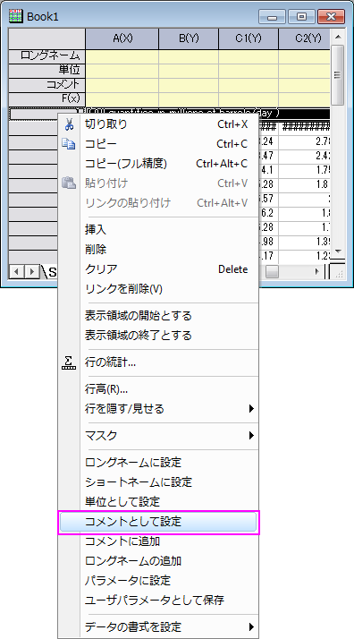
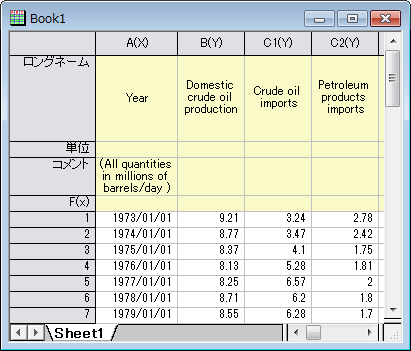
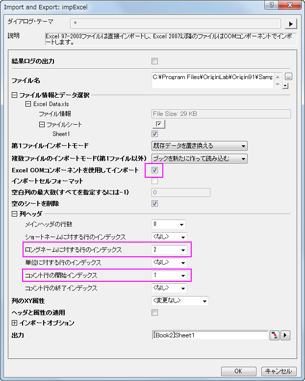
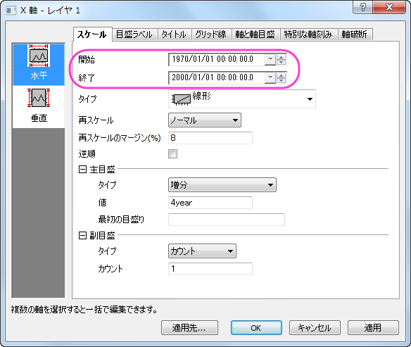

Excelと一緒に操作する
Working-with-Excel
サマリー
Originは柔軟な方法でExcelを操作することができます。OriginワークブックにExcelデータをインポートすることも、Origin内部でExcelブックを開くこともできます。Originのすべてのグラフ機能およびデータ分析機能を使用する場合、ExcelファイルをOriginにインポートする必要があります。Originユーザではない人とExcelワークブックファイルを共有するために、Excelワークブックのままにしておく場合、Excelデータファイルを直接開きます。このチュートリアルで、Excelを操作する方法を紹介します。
学習する項目
このチュートリアルでは、以下の項目について解説します:
- 完全精度でExcelからデータをコピー&ペーストする
- ExcelファイルをOriginワークブックにインポートする
- OriginでExcelファイルを開く
- Originプロジェクトファイルと相対パスでExcelファイルを保存する
Excelからデータをコピー&ペーストする
Excelをインポートしたり、開くのではなく、単にExcelからOriginにデータをコピーして貼り付けたい場合があります。以下のステップでは、完全精度でデータをコピーし貼り付ける方法を説明しています。
- ExcelとOriginを別々に起動します。
- ExcelでOriginインストールフォルダ\Samples\Graphing\ExcelData.XLSファイルを開きます。
- 列Bから列Lを選択します。右クリックしてセルの書式設定を選び、ダイアログで小数点以下の桁数を2にします。これでExcelはOrginよりも少ない小数点以下の数字を表示します。
- Excelシートの左上のセルをクリックして、シート全体を選択し、右クリックしてコピーを選ぶか、キーボードのショートカットCtrl+Cを使ってコピーします。
- Originの新しいブックに移動し、1行1列目を選択してカーソルを配置し、Ctrl+V を押すまたは右クリックして貼り付けを選びます。
- Excelで表示された桁数ではなく、Originでは完全な精度で数値がコピーされます。以下の例で示されていますが、円で囲まれた値はExcelでは小数点以下2桁で表示(0.35)されているのに対し、Originには小数点以下3桁全てが表示された(0.348)ことが分かります。
- Originで、1行目のヘッダを右クリックし、コメントとして設定を選び、この行をOriginのコメント行にします。
- 
- 再び1行目を右クリックし、ロングネームに設定を選びます。この操作でExcelの1行目と2行目がそれぞれOriginのワークシートヘッダになります。
- 
- 1列目をダブルクリックし、日付に設定し、表示フォーマットを2013にします。
 |
ステップ5で右クリックしてリンクを貼りつけするか、 貼り付けを選択する代わりに 「Ctrl+Alt+V」を押すか、「Ctrl+V」を押すことができます。これにより、ExcelデータとOriginのワークブックの間にDDEリンクが作成されます。この方法により、Excelのデータが変更されると、Originのワークブックにリンクしたデータが変更されます。詳細はこのブログをご覧ください。 |
ExcelファイルをOriginワークブックにインポートする
Originには、Excelファイルを直接Originワークブックにインポートする機能があります。複数シートをサポートし、Excelシートの特定の行を指定するオプションを使って、Originワークブックのロングネーム行やコメント行などのヘッダ情報にインポートすることができます。Excelデータで分析やデータ操作を行う場合には、Originにインポートする必要があります。
- Originで新しいブックをアクティブにし、メニューからデータ：ファイルからインポート：Excel (XLS, XLSX)...を選びます。
- Originのインストールフォルダにあるファイル \samples\graphing\Excel Data.xls
を選択し、オプションダイアログを表示するにチェックが付いていることを確認します。
- 現れたダイアログで、Excel COMコンポーネントを使用してインポートのチェックボックスにチェックが付いたままにします。
- 列ヘッダブランチで、コメント行の開始インデックスを1にセットします。
- ロングネームに対する行のインデックスドロップダウンリストで2を選び、OKをクリックしてインポートします。
- 
- 1列目のコメントセルをクリックして選択し、選択したセルの右下にあるポイントをCtrlキーを押しながらドラッグしてデータがある列のコメント行すべてを選択します。これはすべての列に同じコメントをコピーします。
- F4を押し、ワークシートプロパティダイアログを開き、列のデータ型タブをクリックして、適用先ドロップダウンリストで、コメントを選び、ダイナミック統合を水平にし、OKをクリックします。
この操作でコメント行をとうとうしあいとるを全てのデータ列の中央に表示します。
OriginでExcelファイルを開く
外部のXLSファイルをそのまま維持したい場合には、Origin内でExcelワークブックとしてファイルを開き、データを操作します。Origin内で、Excelファイル(.XLSまたは.XLSX)をExcelワークブックとして開くとき、Microsoft
ExcelのOLEインスタンスが起動します。Excelワークブックデータから直接プロットできますが、3Dプロットや分析機能の多くは利用できません。
- メニューからファイル：Excelを開く...を選び、\Samples\Graphing\Excel Data.xlsファイルを選びます。
- 新しいExcelウィンドウがOriginワークスペース内に開きます。このウィンドウをアクティブにすると、Originのメインメニューが変わり、Excel固有のメニューのいくつかが表示されます。Excelのツールバーも利用できます。
- Excelのデータ範囲、A3:A26を選択して右クリックします。セルの書式設定を選び、データが日付フォーマットである事を確認します。
- 作図メニューを選択し、複数Y軸：二重Y軸を選びます。
- ExcelシートのA3:A26を選択し、作図データの選択ダイアログでXボタンをクリックして、Xデータに割り当てます。
- ExcelシートのB3:C26を選択し、作図データの選択ダイアログでYをクリックして、Yデータに割り当てます。作図先ドロップダウンで複数レイヤを選択します。
- 作図ボタンをクリックして二重Y軸グラフを作図します。
- デフォルトで、OriginはX軸の時間の目盛ラベルをYYYY/MM/DD形式で表示します(日本語の場合)。X軸をダブルクリックして、軸ダイアログボックスを開きます。スケールタブの水平アイコンを選択し、スケールの開始値を1970/1/1
に、終了値を 2000/1/1 に設定します。
- 
目盛ラベルタブを開き、左側パネルで下アイコンを選択してから、表示タブでタイプを日付に、表示を年に設定します。
OKをクリックしてこの設定を適用して、ダイアログを閉じます。グラフは次の図のようになります。
|
OriginでExcelを開いた後、別のOriginウィンドウに切り替えると、Excelメニューが存在していた場所に、ツールバーのスペーサが表示されるようになります。。スペーサを取り除くには、右クリックしてツールバースペーサを隠すまたはツールバースペーサを常に隠すを選択することができます。
|
OPJファイルパスへのExcelファイルの相対パスを設定する
Originプロジェクトは、外部ExcelファイルにリンクしているExcelウィンドウを含めることができます。上記のような場合、Originのプロジェクトと同じフォルダまたはOriginのプロジェクトフォルダの中のサブフォルダにExcelファイルを保存すると便利です。これにより2つのファイルをより共に移動しやすくなります。次のように操作しましょう。
- Excelが実行していたら、閉じます。
- 上記のOriginでExcelファイルを開くにあるステップを実行します。任意でグラフを作成します。
- "C:\My Files\My Project.opj"のような同じフォルダ位置にOPJファイルを保存します。
- Excelウィンドウを右クリックしてワークブックの新規保存を選びます。OPJファイルを保存した場所と同じまたはサブフォルダに保存します。例えば、「C:\My
Files\Data\My Data.xls」というパスのフォルダです。
- Excelのウィンドウのタイトルを右クリックしてプロパティを選択します。現プロジェクト（OPJ）パスとの相対位置にチェックを付けます。このチェックボックスの下にあるテキストボックスのExcelファイルのパスが"Data\My
Data.xls"のように相対パスに変わります。
- 再度、OPJを保存します。これで、OPJファイルが保存されている場所から、サブフォルダ構造全体をコピーし、外部メモリ(USBメモリなど)に置いたり、フォルダ構造全体をzip化できます。
別のコンピュータで、OPJファイルを開くとき、OriginはOPJパスからの相対パスでExcelファイルを探します。
|
Excelファイルが別の場所にあり、OPJファイルと同じ場所に保存したい場合、OriginでExcelファイルを開き、タイトルバーを右クリックして、プロパティを選び、保存時にOPJパスに切り替えボタンをクリックします。
OPJファイルを保存すると、Excelファイルが元の場所からOPJが保存されている場所にコピーされます。 |